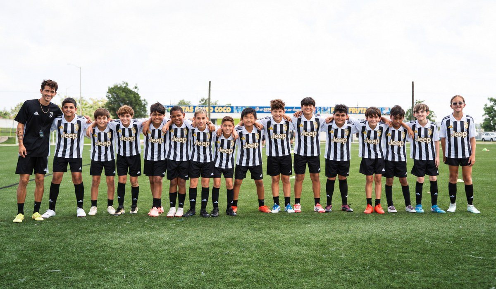

|
Hola María, Seguramente ya has ido a muchos camps y te preguntas por qué el ID Camp de Juventus es diferente. Este es el punto clave: tenemos la historia, la experiencia y los resultados que lo respaldan. 01 Entrenadores desde Italia Entrenadores oficiales de Juventus Academy vienen desde Italia y dirigen cada sesión con la misma metodología con la que Juventus forma a sus jugadores. 02 Una historia que lo respalda Juventus lleva más de cuatro años viniendo a Dallas, construyendo un legado con cientos de jugadores en nuestros programas, y muchos se han ganado la oportunidad de viajar a Italia a entrenar y competir en las instalaciones oficiales de Juventus. 03 Una evaluación completa Al final del camp, cada jugador recibe una evaluación completa de los entrenadores de Juventus Academy. 04 No termina cuando acaba el camp Los jugadores que más se destacan quedan anotados para futuras oportunidades de Juventus Academy, como entrenar todo el año en una sede de la Academy o la Juventus Training Experience en Italia. Ya hay 32 jugadores inscritos en Dallas. Faltan 27 días para el camp. La inscripción cuesta $225 por los dos días, y al inscribir hermanos juntos se descuentan $30. Y un dato más: con el código JUVESPECTRUM ahorras $25 en la inscripción. Ponlo en el campo "Coupon" antes de pagar. 📅 Sábado 21 y domingo 22 de noviembre · 9 AM a 1 PM
📍 Soccer Spectrum, 1251 Digital Dr., Richardson, TX 75081
⚽ Niños y niñas de 6 a 16 años, jugadores y porteros |
¿Dudas o algún problema con el pago?
Escríbenos y te ayudamos a terminar tu inscripción.@juventuscampsusa |

|